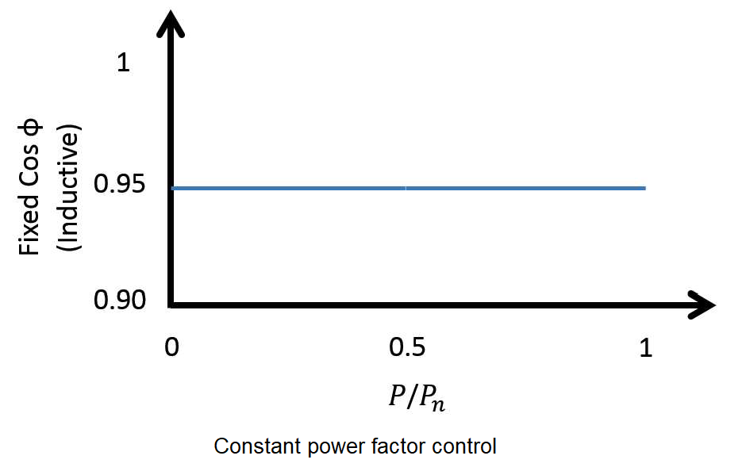
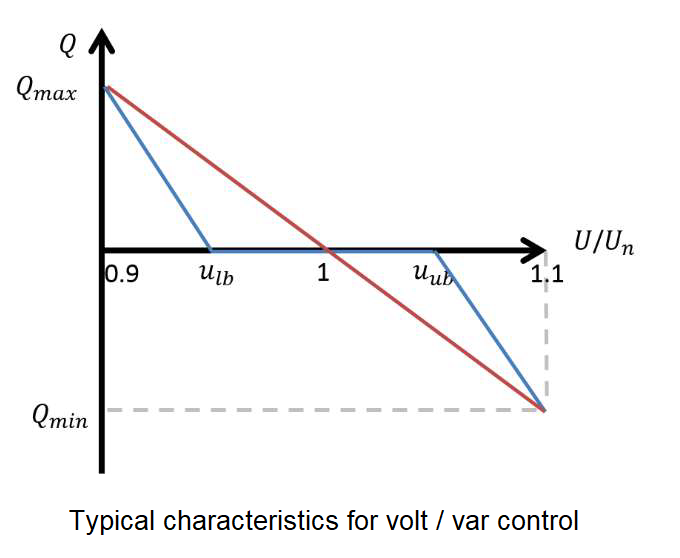
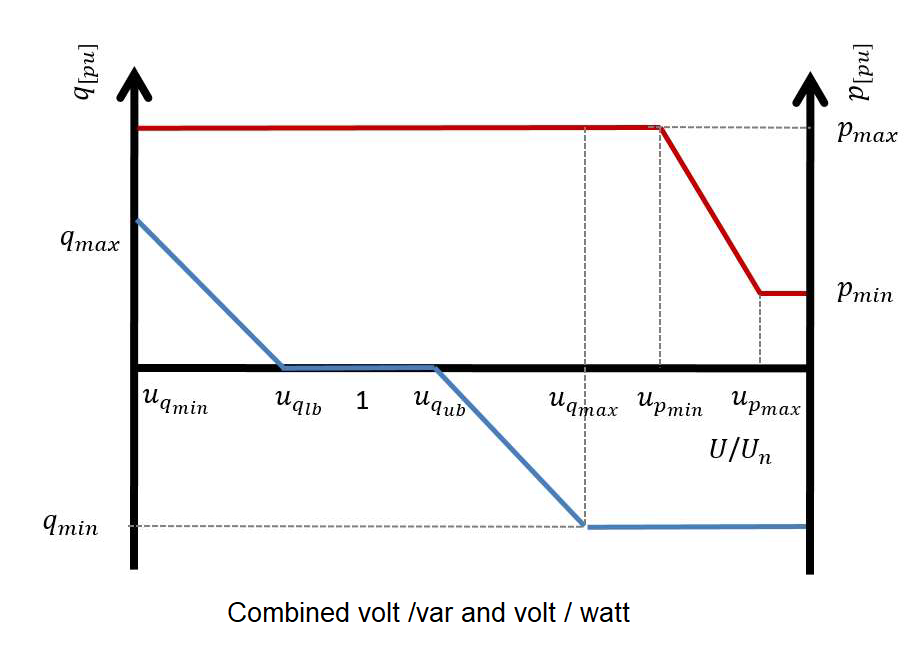

PV System Smart Controller#
Controller overview#
This controller implments three reactive power compensation techniques namely,
constant power factor mode
variable power factor mode
voltage droop mode (a.k.a. volt / var control)
Additionally it implements the volt / watt control and finally implents the trip logic for legacy invereters.
In constant power factor mode, inverter reactive power follows its active power output, thus ensuring power factor remains constant. Constant power factor control mode is cost effective as no additional components are required and is simple to implement. However, constant power factor control is an inherently inefficient compensation technique as reactive power is supplied not taking into consideration the current state of the network.
{kind=link}
Variable power factor control is another reactive power compensation method implemented in this controller. The idea is to operate the inverter at unity power factor while output power is less than a preset fraction of the rated power of the inverter. Once power generation exceeds the preset limit, power factor decreases linearly as a function of inverter power output. At times of peak generation, power factor is at a minimum hence the reactive power supply is maximum. This method is much more efficient when compared with constant power factor mode.

Droop based reactive power compensation also known as Volt/VAR control is another local reactive power compensation method that has been implmented in this controller implementation. In this control method the amount of reactive power an inverter will absorb or inject is dependent upon the voltage at the PCC. The contoller allows users to define different droop curves including linear, piece-wise linear and non-linear curves. The advantage of having a dead band in Volt/VAR droop characteristics is that, it minimizes unnecessary compensation when voltage is within the prescribed bounds. Volt/VAR droop control is more efficient in voltage regulation compared to variable power factor control.
{kind=link}
Active power curtailment algorithm has also been implemented in this controller implementation. Active power curtailment (APC) reduces the amount of active power injected by the PV inverters linearly, as the voltage at their buses increase above a certain value. In this way, it is possible to increase the installed PV capacity and energy yield while preventing overvoltage.
{kind=link}
Controller model#
- pydantic model PyDSS.pyControllers.models.PvControllerModel[source]#
Show JSON schema
{ "title": "PvControllerModel", "type": "object", "properties": { "Control1": { "allOf": [ { "$ref": "#/$defs/SmartControls" } ], "default": "VVar", "description": "Algorithm to run in the first control loop", "title": "Control1" }, "Control2": { "allOf": [ { "$ref": "#/$defs/SmartControls" } ], "default": "None", "description": "Algorithm to run in the second control loop", "title": "Control1" }, "Control3": { "allOf": [ { "$ref": "#/$defs/SmartControls" } ], "default": "None", "description": "Algorithm to run in the third control loop", "title": "Control3" }, "pf": { "default": 1.0, "description": "Power factor for the PV system", "title": "pf", "type": "number" }, "pfMin": { "default": 0.8, "description": "Minimum allowable power factor for the PV system. Applied only if enable_pf_limit is set.", "title": "pfMin", "type": "number" }, "pfMax": { "default": 1.0, "description": "Maximum allowable power factor for the PV system. Applied only if enable_pf_limit is set.", "title": "pfMax", "type": "number" }, "Pmin": { "default": 0.0, "description": "TODO", "title": "Pmin", "type": "number" }, "Pmax": { "default": 1.0, "description": "TODO", "title": "Pmax", "type": "number" }, "uMin": { "default": 0.94, "description": "Per unit voltage value at which inverter produces maximum vars. (volt / var algorithm).", "title": "uMin", "type": "number" }, "uDbMin": { "default": 0.97, "description": "Lower bound for the voltage deadband [per unit]. Inverter will not produce or consume vars within these bands (volt / var algorithm).", "title": "uDbMin", "type": "number" }, "uDbMax": { "default": 1.03, "description": "Upper bound for the voltage deadband [per unit]. Inverter will not produce or consume vars within these bands (volt / var algorithm).", "title": "uDbMax", "type": "number" }, "uMax": { "default": 1.06, "description": "Per unit voltage value at which inverter consumes maximum vars (volt / var algorithm).", "title": "uMax", "type": "number" }, "QlimPU": { "default": 0.44, "description": "Inverter reactive power limit [per unit] for the volt / var algorithm.", "title": "QlimPU", "type": "number" }, "PFlim": { "default": 0.9, "description": "Inverter power factor limit. Applied only if enable_pf_limit is set.", "title": "PFlim", "type": "number" }, "Enable PF limit": { "default": false, "description": "Flag to enable / disable power factor limits on the inverter", "title": "EnablePFLimit", "type": "boolean" }, "uMinC": { "default": 1.06, "description": "Lower voltage bound [per unit] for the volt / watt algorithm", "title": "uMinC", "type": "number" }, "uMaxC": { "default": 1.1, "description": "Upper voltage bound [per unit] for the volt / watt algorithm", "title": "uMaxC", "type": "number" }, "PminVW": { "default": 10.0, "description": "Lower bound for the inveter active power output for the volt / watt algorithm", "title": "PminVW", "type": "number" }, "VWtype": { "allOf": [ { "$ref": "#/$defs/VoltWattCurtailmentStrategy" } ], "default": "Rated Power", "description": "volt / watt algorithm to be implemented on rated or available power", "title": "VWtype" }, "%PCutin": { "default": 10.0, "description": "Percentage cut-in power -- Percentage of kVA rating of inverter. When the inverter is OFF, the power from the array must be greater than this for the inverter to turn on.", "title": "PCutin", "type": "number" }, "%PCutout": { "default": 10.0, "description": "Percentage cut-out power -- Percentage of kVA rating of inverter. When the inverter is ON, the inverter turns OFF when the power from the array drops below this value.", "title": "%PCutout", "type": "number" }, "Efficiency": { "default": 100.0, "description": "Efficieny of the inverter system", "title": "Efficiency", "type": "number" }, "Priority": { "allOf": [ { "$ref": "#/$defs/ControlPriority" } ], "default": "Var", "description": "Set export priority for active power or reactive power", "title": "Priority" }, "DampCoef": { "default": 0.8, "description": "Damping cooefficient for the convergence algorithm", "title": "DampCoef", "type": "number" }, "voltage_calc_mode": { "allOf": [ { "$ref": "#/$defs/VoltageCalcModes" } ], "default": "Max", "description": "Voltage values used for calculations." } }, "$defs": { "ControlPriority": { "description": "Variable to prooritize at inverter capability limit\n\n**VAR** - *Var priority*\n \n**WATT** - *Watt priority*\n\n**PF** - *Powerfactor priority*\n ", "enum": [ "Var", "Watt", "PF" ], "title": "ControlPriority", "type": "string" }, "SmartControls": { "description": "Supported smart control algorithms\n\n**NONE** - *No contol algorithm*\n \n**CONSTANT_POWER_FACTOR** - *Constant power factor implmentation*\n\n**VARIABLE_POWER_FACTOR** - *Variable power factor implmentation* \n\n**VOLT_VAR** - *Volt / Var algorithm implementation*\n\n**VOLT_WATT** - *Volt / Watt algorithm implementation* \n\n**TRIP** - *Over voltage trip implementation*", "enum": [ "None", "cpf", "vpf", "VVar", "vwatt", "trip" ], "title": "SmartControls", "type": "string" }, "VoltWattCurtailmentStrategy": { "description": "Curtailment strategy for volt / watt algorithm\n\n**AVAILABLE_POWER** - *Curtailment is based on available power of the inverter*\n \n**RAETED_POWER** - *Curtailment is based on rated power of the inverter*\n ", "enum": [ "Available Power", "Rated Power" ], "title": "VoltWattCurtailmentStrategy", "type": "string" }, "VoltageCalcModes": { "description": "Voltage calculation modes for the controller\n\n**MAX** - *The the maximum voltage from the available phases as the contoller input*\n\n**AVG** - *The the average voltage from the available phases as the contoller input*\n\n**MIN** - *The the minimum voltage from the available phases as the contoller input*\n\n**A** - *The voltage from phase A as the contoller input*\n\n**B** - *The voltage from phase B as the contoller input*\n\n**C** - *The voltage from phase C as the contoller input*", "enum": [ "Max", "Avg", "Min", "1", "2", "3" ], "title": "VoltageCalcModes", "type": "string" } } }
- Fields:
- field control1: SmartControls = SmartControls.VOLT_VAR (alias 'Control1')#
Algorithm to run in the first control loop
- field control2: SmartControls = SmartControls.NONE (alias 'Control2')#
Algorithm to run in the second control loop
- field control3: SmartControls = SmartControls.NONE (alias 'Control3')#
Algorithm to run in the third control loop
- field damp_coef: float = 0.8 (alias 'DampCoef')#
Damping cooefficient for the convergence algorithm
- field efficiency: float = 100.0 (alias 'Efficiency')#
Efficieny of the inverter system
- field enable_pf_limit: bool = False (alias 'Enable PF limit')#
Flag to enable / disable power factor limits on the inverter
- field p_max: float = 1.0 (alias 'Pmax')#
TODO
- field p_min: float = 0.0 (alias 'Pmin')#
TODO
- field p_min_vw: float = 10.0 (alias 'PminVW')#
Lower bound for the inveter active power output for the volt / watt algorithm
- field percent_p_cutin: float = 10.0 (alias '%PCutin')#
Percentage cut-in power – Percentage of kVA rating of inverter. When the inverter is OFF, the power from the array must be greater than this for the inverter to turn on.
- field percent_p_cutout: float = 10.0 (alias '%PCutout')#
Percentage cut-out power – Percentage of kVA rating of inverter. When the inverter is ON, the inverter turns OFF when the power from the array drops below this value.
- field pf: float = 1.0#
Power factor for the PV system
- field pf_lim: float = 0.9 (alias 'PFlim')#
Inverter power factor limit. Applied only if enable_pf_limit is set.
- field pf_max: float = 1.0 (alias 'pfMax')#
Maximum allowable power factor for the PV system. Applied only if enable_pf_limit is set.
- field pf_min: float = 0.8 (alias 'pfMin')#
Minimum allowable power factor for the PV system. Applied only if enable_pf_limit is set.
- field priority: ControlPriority = ControlPriority.VAR (alias 'Priority')#
Set export priority for active power or reactive power
- field q_lim_pu: float = 0.44 (alias 'QlimPU')#
Inverter reactive power limit [per unit] for the volt / var algorithm.
- field u_db_max: float = 1.03 (alias 'uDbMax')#
Upper bound for the voltage deadband [per unit]. Inverter will not produce or consume vars within these bands (volt / var algorithm).
- field u_db_min: float = 0.97 (alias 'uDbMin')#
Lower bound for the voltage deadband [per unit]. Inverter will not produce or consume vars within these bands (volt / var algorithm).
- field u_max: float = 1.06 (alias 'uMax')#
Per unit voltage value at which inverter consumes maximum vars (volt / var algorithm).
- field u_max_c: float = 1.1 (alias 'uMaxC')#
Upper voltage bound [per unit] for the volt / watt algorithm
- field u_min: float = 0.94 (alias 'uMin')#
Per unit voltage value at which inverter produces maximum vars. (volt / var algorithm).
- field u_min_c: float = 1.06 (alias 'uMinC')#
Lower voltage bound [per unit] for the volt / watt algorithm
- field voltage_calc_mode: VoltageCalcModes = VoltageCalcModes.MAX#
Voltage values used for calculations.
- field vw_type: VoltWattCurtailmentStrategy = VoltWattCurtailmentStrategy.RAETED_POWER (alias 'VWtype')#
volt / watt algorithm to be implemented on rated or available power
- model_computed_fields: ClassVar[dict[str, ComputedFieldInfo]] = {}#
A dictionary of computed field names and their corresponding ComputedFieldInfo objects.
Controller options#
- enum PyDSS.pyControllers.enumerations.SmartControls(value)[source]#
Supported smart control algorithms
NONE - No contol algorithm
CONSTANT_POWER_FACTOR - Constant power factor implmentation
VARIABLE_POWER_FACTOR - Variable power factor implmentation
VOLT_VAR - Volt / Var algorithm implementation
VOLT_WATT - Volt / Watt algorithm implementation
TRIP - Over voltage trip implementation
- Member Type:
str
Valid values are as follows:
- NONE = <SmartControls.NONE: 'None'>#
- CONSTANT_POWER_FACTOR = <SmartControls.CONSTANT_POWER_FACTOR: 'cpf'>#
- VARIABLE_POWER_FACTOR = <SmartControls.VARIABLE_POWER_FACTOR: 'vpf'>#
- VOLT_VAR = <SmartControls.VOLT_VAR: 'VVar'>#
- VOLT_WATT = <SmartControls.VOLT_WATT: 'vwatt'>#
- TRIP = <SmartControls.TRIP: 'trip'>#
- enum PyDSS.pyControllers.enumerations.ControlPriority(value)[source]#
Variable to prooritize at inverter capability limit
VAR - Var priority
WATT - Watt priority
PF - Powerfactor priority
- Member Type:
str
Valid values are as follows:
- VAR = <ControlPriority.VAR: 'Var'>#
- WATT = <ControlPriority.WATT: 'Watt'>#
- PF = <ControlPriority.PF: 'PF'>#
- enum PyDSS.pyControllers.enumerations.VoltWattCurtailmentStrategy(value)[source]#
Curtailment strategy for volt / watt algorithm
AVAILABLE_POWER - Curtailment is based on available power of the inverter
RAETED_POWER - Curtailment is based on rated power of the inverter
- Member Type:
str
Valid values are as follows:
- AVAILABLE_POWER = <VoltWattCurtailmentStrategy.AVAILABLE_POWER: 'Available Power'>#
- RAETED_POWER = <VoltWattCurtailmentStrategy.RAETED_POWER: 'Rated Power'>#
- enum PyDSS.pyControllers.enumerations.VoltageCalcModes(value)[source]#
Voltage calculation modes for the controller
MAX - The the maximum voltage from the available phases as the contoller input
AVG - The the average voltage from the available phases as the contoller input
MIN - The the minimum voltage from the available phases as the contoller input
A - The voltage from phase A as the contoller input
B - The voltage from phase B as the contoller input
C - The voltage from phase C as the contoller input
- Member Type:
str
Valid values are as follows:
- MAX = <VoltageCalcModes.MAX: 'Max'>#
- AVG = <VoltageCalcModes.AVG: 'Avg'>#
- MIN = <VoltageCalcModes.MIN: 'Min'>#
- A = <VoltageCalcModes.A: '1'>#
- B = <VoltageCalcModes.B: '2'>#
- C = <VoltageCalcModes.C: '3'>#